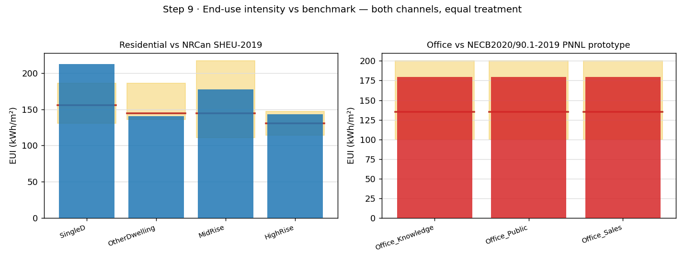
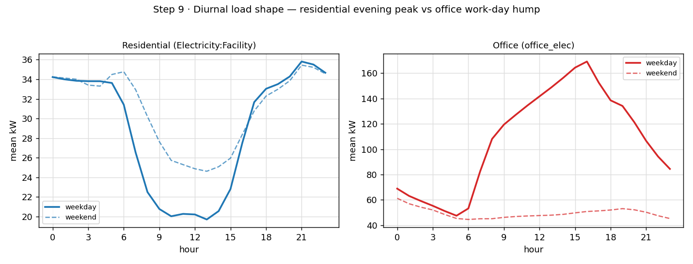
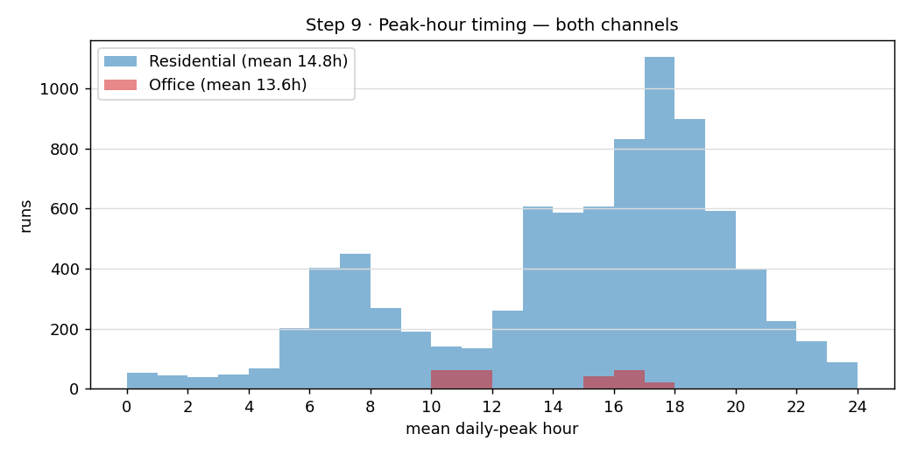
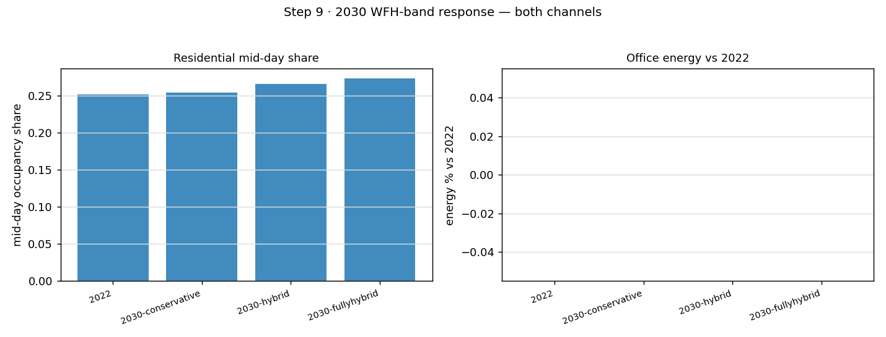

Residential (AT_HOME) + Office (AT_WORK), each on its own benchmark. Aggregate depth; no re-simulation.
| channel | group | unit | n | median_eui | band_central | band_lo | band_hi | in_band | lights_share | equip_share | benchmark |
|---|---|---|---|---|---|---|---|---|---|---|---|
| resid | SingleD | dwelling | 2100 | 212.5 | 155.6 | 130.6 | 186.1 | False | 0.163 | 0.606 | SHEU-2019 |
| resid | OtherDwelling | dwelling | 2100 | 140.4 | 144.4 | 136.1 | 186.1 | True | 0.169 | 0.624 | SHEU-2019 |
| resid | MidRise | dwelling | 2100 | 177.3 | 144.4 | 111.1 | 216.7 | True | 0.191 | 0.276 | SHEU-2019 |
| resid | HighRise | dwelling | 2100 | 142.9 | 130.6 | 113.9 | 147.2 | True | 0.275 | 0.396 | SHEU-2019 |
| office | all | tower | 252 | 179.6 | 135 | 100 | 200 | True | NaN | NaN | NECB-PNNL (SCIEU context 230) |
| office | Office_Knowledge | tower | 84 | 179.6 | 135 | 100 | 200 | True | NaN | NaN | NECB-PNNL |
| office | Office_Public | tower | 84 | 179.6 | 135 | 100 | 200 | True | NaN | NaN | NECB-PNNL |
| office | Office_Sales | tower | 84 | 179.6 | 135 | 100 | 200 | True | NaN | NaN | NECB-PNNL |
| channel | mean_peak_hour | wd_midday_kW | wd_night_kW | we_midday_kW | coincidence_factor |
|---|---|---|---|---|---|
| resid | 14.78 | 22.62 | 33.53 | 26.49 | 0.822 |
| office | 13.61 | 145.98 | 56.95 | 48.53 | NaN |
| channel | scenario | energy_kWh | energy_pct_vs_2022 | occ_mean | occ_pct_vs_2022 | midday_share | midday_share_vs_2022 |
|---|---|---|---|---|---|---|---|
| resid | 2005 | 434897 | -0.14 | NaN | NaN | 0.25 | -0.003 |
| resid | 2010 | 438120 | 0.6 | NaN | NaN | 0.253 | 0 |
| resid | 2015 | 433050 | -0.57 | NaN | NaN | 0.235 | -0.017 |
| resid | 2022 | 435521 | 0 | NaN | NaN | 0.252 | 0 |
| resid | 2030-conservative | 440549 | 1.15 | NaN | NaN | 0.254 | 0.002 |
| resid | 2030-hybrid | 443318 | 1.79 | NaN | NaN | 0.266 | 0.014 |
| resid | 2030-fullyhybrid | 444823 | 2.14 | NaN | NaN | 0.273 | 0.021 |
| office | 2005 | 1.90663e+07 | 0 | 163.683 | 0 | 0.447 | 0 |
| office | 2010 | 1.90659e+07 | -0 | 163.683 | 0 | 0.447 | 0 |
| office | 2015 | 1.90661e+07 | 0 | 163.683 | 0 | 0.447 | 0 |
| office | 2022 | 1.9066e+07 | 0 | 163.683 | 0 | 0.447 | 0 |
| office | 2030-conservative | 1.9066e+07 | -0 | 163.683 | 0 | 0.447 | 0 |
| office | 2030-hybrid | 1.90661e+07 | 0 | 163.683 | 0 | 0.447 | 0 |
| office | 2030-fullyhybrid | 1.90663e+07 | 0 | 163.683 | 0 | 0.447 | 0 |
| channel | cycle | midday_share | mean_peak_hour | energy_kWh |
|---|---|---|---|---|
| resid | 2005 | 0.25 | 15.11 | 434897 |
| resid | 2010 | 0.253 | 15.16 | 438120 |
| resid | 2015 | 0.235 | 15.76 | 433050 |
| resid | 2022 | 0.252 | 15.33 | 435521 |
| office | 2005 | 0.447 | 13.61 | 1.90663e+07 |
| office | 2010 | 0.447 | 13.61 | 1.90659e+07 |
| office | 2015 | 0.447 | 13.61 | 1.90661e+07 |
| office | 2022 | 0.447 | 13.61 | 1.9066e+07 |



